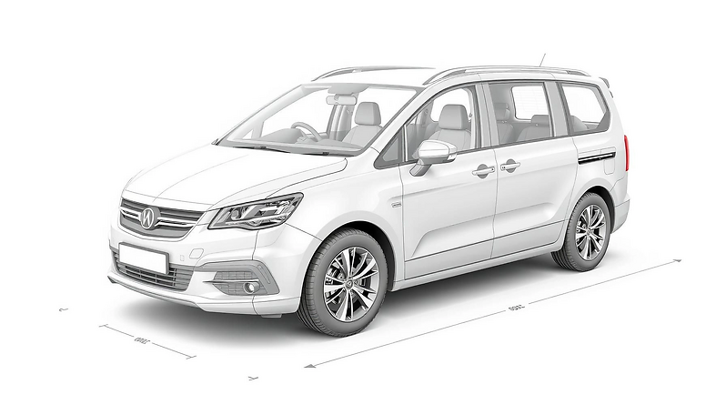

Киоск диагностики и толщинометрииготов через 2 клика
Экран мгновенно показывает два сценария — толщинометрия и полная OBD‑проверка. Терминал сам выдаёт
оборудование, отслеживает подключение устройств и формирует отчёт простым языком без технического
сленга. Всё укладывается в пару минут даже для тех, кто видит киоск впервые.
Автовыдача толщиномера и OBD‑адаптераPDF и SMS отчёты сразу после завершенияQR‑оплата, статус виден на экране
Обслужили 10 000+ автомобилей98% точность · результаты за 3 минуты
Коснитесь в любом месте — переход к согласию и выбору услуги занимает менее
секунды.
Каждый экран отвечает только за одно действие, поэтому не нужно вспоминать сложные
цепочки.
10 842
успешных диагностик
4.9/5
оценка сервиса
Этапы «Подключение → Анализ → Отчёт» видны в реальном времени
Данные берём только с устройств — никаких симуляций или догадок
Толщиномер и OBD‑адаптер выдаются автоматически после оплаты
Набор оборудования готовТолщиномер заряжен · QR платёж активен
Шаг 1 · Приветствие
Путь расписан по шагам и не требует подсказок персонала
Терминал говорит простым языком: объясняет, что будет происходить, показывает обязательные шаги и сразу
предлагает службу поддержки, если устройство не готово. Ничего лишнего — только то, что нужно для быстрого
старта.
1 экран — 1 действие
Каждый экран содержит одну задачу: согласие, выбор услуги, оплата или статус оборудования.
Устройства под контролем
Киоск сам выдаёт толщиномер и OBD‑адаптер, а экран показывает заряд, связь и готовность.
Отчёт сразу
PDF и SMS/Email формируются сразу после завершения и автоматически стираются через 30 дней.
Перед началом
Примите условия обслуживания
Мы используем контакты только для отправки отчётов. После доставки файл и персональные данные
автоматически удаляются. Подробные правила доступны по ссылке.
Данные защищены
Сессия очищается после завершения или 5 минут простоя. В журнал попадают только технические события.
Шаг 2 · Выбор сервиса
Выберите формат проверки
Доступны два сценария: детальная OBD‑диагностика и расширенная толщинометрия кузова. Каждый
из них запускается мгновенно, показывает прогресс и выдаёт отчёт с понятными рекомендациями. Выбор
подтверждается одной кнопкой.
≤ 3 мин
до готовности отчёта
85%
переходят к оплате
Диагностика
Полная проверка двигателя
Обнаружит до 99% скрытых проблем: от ошибок блока управления до состояния
датчиков.
480 ₽
фиксированная стоимость
Включает: анализ ошибок, рекомендации, адреса ближайших сервисов
Видите этапы: подключение → сканирование → отчёт
PDF и SMS сразу после завершения
Адаптер подключенBluetooth стабильный · поддерживаем Toyota, Lexus, Hyundai, BMW
Измерение кузова
Профессиональная толщинометрия
Проверим до 60 точек ЛКП по фиксированной схеме и покажем отклонения цветом.
от 350 ₽
зависит от типа кузова
Включает: схему кузова, анализ зон риска, PDF отчёт
Терминал выдаёт толщиномер после оплаты и ведёт по точкам
Рекомендуемые действия и ближайшие сервисы в конце
Устройство готовоЗаряд 98% · калибровка подтверждена
Толщинометрия ЛКП
Киоск выдаёт откалиброванный толщиномер сразу после оплаты. На экране видно схему кузова,
остаток точек и подсказки по каждому замеру. Все значения берутся только с устройства и фиксируются в отчёте.
Мы измеряем реальные слои ЛКП, чтобы выявить перекрасы, шпаклёвку и следы ремонта.
Подсказки подскажут, куда приложить датчик и как держать его ровно. Все результаты автоматически отправляются
на телефон или email и удаляются спустя 30 дней.
40–60 точек на кузове по понятной схеме.
Подсказки на каждом шаге — без лишних вопросов.
Отчёт отправим на телефон/email сразу после завершения.
Для контроля мы сохраняем время каждого измерения и состояние устройства — можно просмотреть историю в
отчёте.
01
Выберите тип кузова
Мы сразу фиксируем стоимость и подбираем схему точек.
02
Подтвердите контакт
Телефон или email нужен только для отправки PDF/SMS отчёта.
03
Оплатите и получите устройство
QR оплата → выдача толщиномера → подсказки по точкам.
Седан
40 точек по стойкам, крыше и дверям
350 ₽
Слот выдачи №1
Среднее время замеров ≈ 2 мин
Хэтчбек
Компакт 3/5 дверей, удобный доступ сзади
350 ₽
Слот выдачи №1
45 точек + крышка багажника

Минивэн
Расширенная схема для MPV и микроавтобусов
400 ₽
Слот выдачи №2
До 60 точек, включая двери-сдвижки
Куда отправить отчёт?
Телефон или email нужны исключительно для доставки PDF/SMS. Не делимся контактами,
автоматически удаляем их через 30 дней или раньше по запросу.
Формат проверяется автоматически. Введите телефон или
email — мы пришлём ссылку сразу после завершения измерений.
Выбор кузова
Тип кузова пока не выбран
— ₽
Выберите карточку на предыдущем шаге, чтобы зафиксировать стоимость.
После выбора покажем слот выдачи и среднее
время замеров.
Как это работает
Введите номер в формате +7 (9XX) XXX-XX-XX или укажите email.
После завершения измерений пришлём SMS или письмо с PDF и ссылкой.
Контакты используются только для отчёта — без подписок и рекламных сообщений.
SMS с ссылкой
Письмо с PDF
Удаляем после отправки
Оплата по QR
Отсканируйте QR-код для оплаты. В этой сборке оплата временно недоступна (провайдер ещё не
подключён).
Мы показываем сумму и назначение платежа до подтверждения. После оплаты терминал
автоматически проверит поступление средств и откроет следующий шаг.
Подготовка оборудования
Перед выдачей мы проверяем заряд устройства и корректность калибровки. Следуйте шагам ниже
— так замеры будут точными даже на сложных участках кузова.
01
Проверяем заряд
Терминал убеждается, что батарея толщиномера ≥ 90% и датчик прошёл самотест.
02
Выдаём устройство
Отсек откроется автоматически. Возьмите прибор и протрите эталонную пластину.
03
Готовим поверхность
Протрите участок кузова, держите датчик перпендикулярно и касайтесь без усилий.
Статус оборудования
Слот закрыт до подтверждения отплаты.
Последняя калибровка: < 24 часов назад.
Не кладите прибор в карман — используйте ремешок.
Измерения
Требуется подключённый поддерживаемый толщиномер. Без устройства измерения недоступны.
Сначала выполните контрольный замер на эталонной пластине — приложение подтвердит готовность.
Если нужно сделать паузу — просто положите датчик в держатель, сессия сохранится.
Толщиномер: нет
соединения
Прогресс измерений
—
Нет симуляции измерений в PROD. В DEV используйте «Пропустить» для навигации.
Готово
Отчёт сформирован. Посмотрите предпросмотр и решите — отправить по SMS/email или сохранить
локально.
В файле вы увидите таблицу с точками измерений, текстовые комментарии и рекомендации по
повторной проверке. Если что-то пошло не так, можно сразу начать новую сессию.
Если оставить экран без действий, терминал через 30 секунд автоматически вернёт вас на
главный экран. Любое касание сбрасывает таймер.
Проверить PDF
Откройте предпросмотр на экране или на устройстве — файл доступен 30 дней.
Отправить клиенту
SMS/email уходят сразу после подтверждения, можно дублировать вручную.
Начать новую сессию
Если нужно проверить другое авто — нажмите «На главный экран» и стартуйте заново.
Диагностика OBD‑II
Подключаемся к адаптеру ELM327 и считываем коды неисправностей (DTC), статусы систем и ключевые
параметры в стандартизированном режиме. Всё прозрачно и без лишних терминов.
Система автоматически распознаёт марку автомобиля и подбирает оптимальный сценарий опроса.
В отчёте будут коды DTC, описание неисправностей и рекомендации по дальнейшим действиям.
Быстрый обзор систем или детальный стандарт OBD‑II — на ваш выбор.
Покажем актуальные коды/статусы и кратко объясним, что это значит.
Платёж — после готовности отчёта. Сразу после оплаты откроем результаты.
Режим определяет глубину проверки, марка — подсказки подключения.
02
Подключите адаптер
Экран покажет подготовку, проверит питание и самопроверку устройства.
03
Получите результат и оплатите
После сканирования показываем сводку, а полный отчёт открываем после оплаты.
Общая
Краткая проверка основных систем
OBD‑II
Стандартизированный режим OBD‑II
Куда отправить отчёт?
Контакты нужны только для уведомлений о ходе сканирования и ссылки на PDF. Никаких
дополнительных рассылок — данные удаляются автоматически через 30 дней.
Введите телефон с кодом России — мы пришлём результаты
диагностики сразу после завершения. Допустим и email, если предпочитаете письмо.
Параметры диагностики
Марка не выбрана
Выберите режим проверки
После выбора подберём схему подключения и проверок.
Режим «OBD‑II» раскрывает стандартизированные
команды, «Общая» — быстрый обзор систем.
Как это работает
Укажите телефон или email — мы проверим формат автоматически.
По готовности диагностики отправим ссылку и файл отчёта.
Контакты нужны только для доставки — мы их удаляем.
SMS с ссылкой
Письмо с PDF
Удаляем после отправки
Выбор автомобиля
Выберите марку — мы подготовим подсказки подключения и учтём особенности системы.
ToyotaTNGA · CAN 11 бит · адаптер до 90 c
Покажем разъём, проверим питание и выведем live-данные двигателя без сложной
терминологии.
Подсветим схемы подключения OBD‑II
Отдельная вкладка для гибридных батарей
LexusГибридные комплексы · premium CAN
Премиальные блоки подключаются деликатно: подсказки подскажут, когда включать READY
и как безопасно считать HV‑ошибки.
Контроль HV аккумулятора
Расшифровка предупреждений VSC/PCS
HyundaiCAN + K-Line, корейские блоки
Для Solaris, Creta и др. укажем варианты портов, переключим адаптер между CAN и
K-Line автоматически.
Проверим ESP и подушки безопасности
Live‑данные трансмиссии
BMWISTA/UDS подсказки
Покажем подсказки к шинам MOST/UDS, чтобы легко пройти через этапы сканирования и не
перегрузить адаптер.
Поддержка BDC/FEM блоков
Рекомендации для сброса адаптаций
Логотип помогает понять, что сценарий подобран именно под выбранную марку: мы используем
официальные схемы расположения разъёма и стандарты CAN/LIN протоколов.
Логотип и краткие подсказки появятся после выбора. Список марок будем расширять.
Подготовка оборудования
Чтобы сканирование прошло корректно, убедитесь что аккумулятор не разряжен, а адаптер
ELM327 установлен до щелчка. Если автомобиль гибридный, дождитесь сообщения на приборной панели о готовности
систем.
01
Подключите адаптер
Вставьте ELM327 в разъём до щелчка. Программа контролирует питание и подсветит ошибки.
02
Включите зажигание
Заведите бортовую сеть без запуска двигателя, чтобы блоки перешли в режим ответа.
03
Следите за подсказками
Экран подскажет, когда начать сканирование, и сообщит о найденных проблемах.
Контроль соединения
Питание адаптера фиксируем автоматически.
Проверяем протоколы CAN/ISO перед запуском скана.
Не отключайте адаптер до завершения отчёта.
Сканирование
Требуется подключённый адаптер ELM327. Без устройства сканирование недоступно.
После подключения мы выполняем автоматическую самопроверку адаптера и фиксируем уровень напряжения
бортсети.
Можно наблюдать прогресс: сначала считываются коды, затем статусы систем и live-данные.
Если связь прервётся — приложение предложит восстановить сессию без повторного ввода данных.
OBD‑адаптер: нет
соединения
Нет симуляции данных в PROD. В DEV используйте «Пропустить».
Подключите адаптер и обновите список.
Показ результатов после оплаты
Стоимость зависит от выбранного режима диагностики.
До оплаты вы видите сводную информацию о найденных ошибках и длительности сканирования.
После подтверждения откроется полный отчёт с расшифровкой и рекомендациями.
Результаты диагностики
Здесь будут коды DTC и статусы при подключённом устройстве.
Каждый код сопровождается пояснением уровня серьёзности. Вы можете обновить live-данные,
чтобы сравнить показатели до и после сброса, или сохранить сессию для отправки на email.
Коды неисправностей
Отсутствуют данные без устройства.
Готово
Отчёт сформирован. Посмотрите предпросмотр и решите — отправить по SMS/email или сохранить
локально.
В отчёте указаны коды ошибок, статус MIL, результаты самопроверки адаптера и, при
необходимости, отметка о выполнении сброса DTC. Вы всегда можете вернуться к терминалу для повторной проверки.
Киоск сам сбрасывает экран через 30 секунд бездействия, чтобы подготовить следующую
сессию. Нажатие любой кнопки отменит обратный отсчёт.
Сохранить отчёт
PDF содержит коды, статусы MIL и отметку о сбросе ошибок. Скачайте его до истечения сессии.
Отправить клиенту
SMS/email фиксируются в истории Supabase. При необходимости можно повторить отправку.
План действий
Используйте рекомендации отчёта или сразу начните новую диагностику после устранения проблемы.